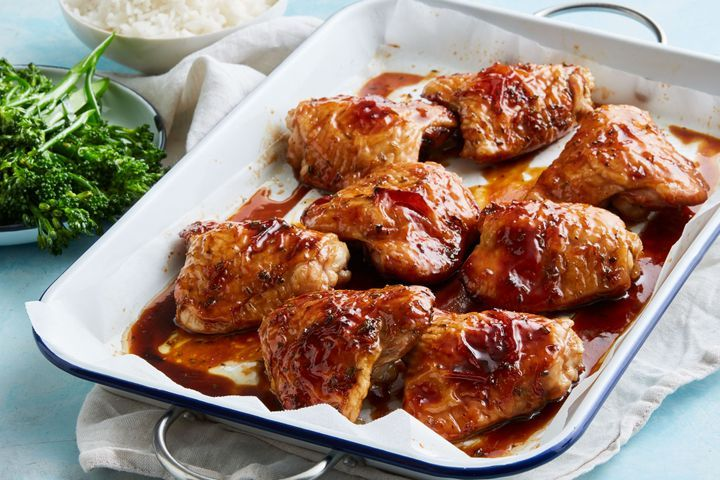

This simple chicken dinner packs a lot of flavout - garlic, herbs, plus the sweetness of treacle. It's also a one-tray wonder and is prepped in five minute.
Capers and prosciutto add instant flavour to this quick fish dinner, and simmering the capsicum and tomato until tender and sweet guarantees a brilliant balance of flavour. Serve it with a side of crusty bread for a speedy, nourishing midweek meal.
Try this Mongolian lamb stir-fry for a simple, tasty weeknight meal.
We've turned buttery and garlicky chicken kiev into a quick, easy and delicious pasta bake, and it's on the table in less than 40 minutes.
The churros in this cake are baked not fried, so you can tell yourself this is a 'healthier' version when you're devouring the layers of creamy, fluffy, caramel goodness.